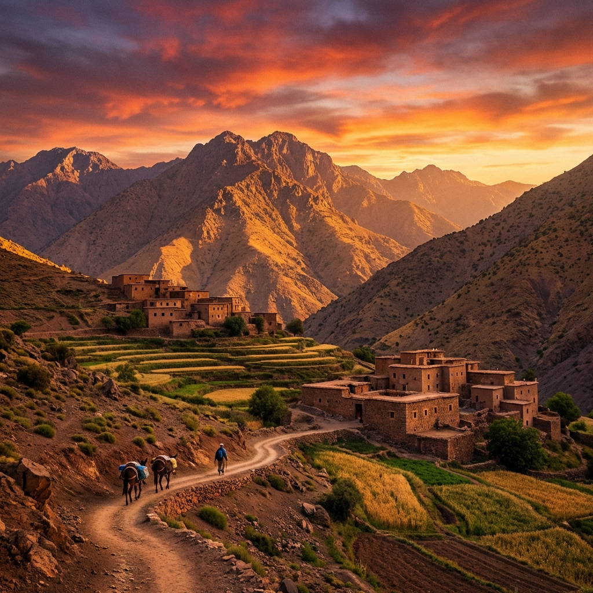
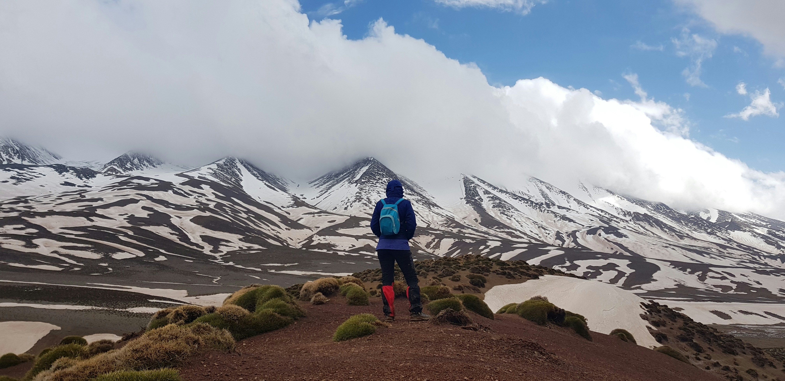

Marroc: L'Atlas i el Desert
Una immersió en la cultura berber i paisatges de contrastos.
Cultura i Muntanya


Expedició al Toubkal
Descobreix la màgia del nord d'Àfrica. Des dels cims nevats de l'Alt Atles fins a la immensitat de les dunes del Sàhara, el Marroc ofereix una experiència sensorial inigualable.
Punts Forts del Viatge
- Ascensió al Toubkal (4.167m), el sostre del nord d'Àfrica.
- Nits sota les estrelles en campaments berbers tradicionals.
- Exploració dels socs i la història de Marrakech.
Galeria d'imatges


Recorda: Aquesta és només una proposta base. La nostra especialitat és la personalització total. Adaptem l'itinerari, la dificultat i els serveis al gust i ritme del vostre grup per fer que el viatge sigui realment vostre.